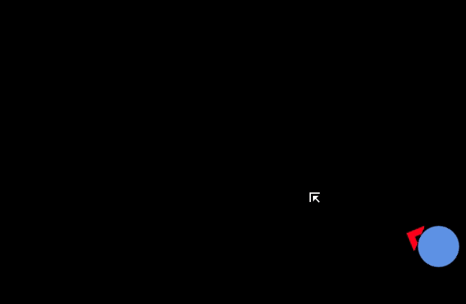
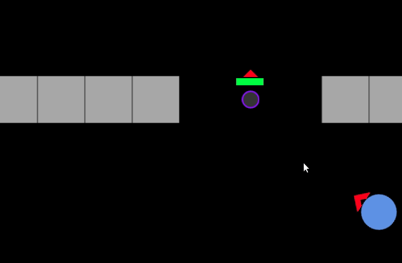
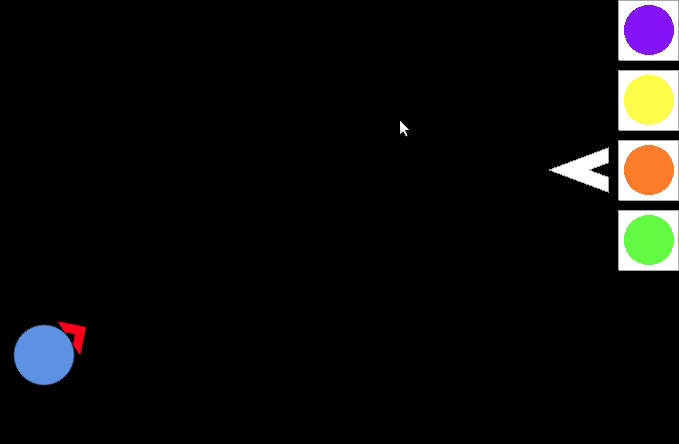

Tutorial
Basic game elements and some hints.
Controls
Left-click to attack.
F-button to switch between attack and interaction mode. Interaction mode allows to click on build
menu, towers and diplomats.
In interaction mode click on build menu to select towers and left-click to build.
Click on tower to open the tower menu and left-click to sell.

Open the diplomat menu via left-click on the diplomat and left-click to accept quests/check
quests/switch target.

Towers
First gain souls by killing units yourself or by letting your towers kill units.
Build the shooter to deal damage but be careful to position it so that the bullets can reach the
enemy fast enough. The shooter costs 100 souls.
Build the healer to heal yourself and all the towers in its range. The healer costs 200 souls.
Remember that towers are limited but can be sold for free and placed somewhere else
Camps
The white arrow shows which camp has now started to send its wave.

The red marking shows which camp you need to destroy to fulfill your accepted quest.
The big x shows which camps are destroyed.
The C shows which camps are cooperating with you and whose waves will not attack you.
The colored arrow shows where cooperating camps are sending theirnext wave. Change
this target via the diplomat menu.

The king awaits behind this barrier. Kill him to win.
Hints
This next section contains minor gameplay spoilers. You might want to experiment in-game first before reading on.
To reduce the waves, you can just destroy some of the buildings. Each building marking corresponds to
the size of circle that is spawned by it.
Small units can be killed with one shot (see Controls for example). With good timing this can be an easy source of souls and the start of the game.